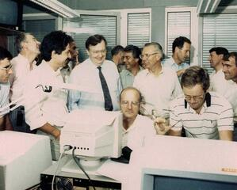

Timothy John Berners-Lee was born in London, England on June 8, 1955. He was born to parents Mary Lee Woods and Conway Berners-Lee, and was the eldest of three siblings. The Berners-Lee couple worked on the very first ever commercial computer, known as the Ferranti Mark 1, after the government contracted Ferranti to build a commericial computer for the masses This shows the clear connection that Timothy had to computers and technology at a young age. He attended Sheen Mount Primary school, then went on to spend four years at Emanuel School in south west London. As a child, he was a very keen train-spotter and learned all about electronics through tinkering around with different electronic railway systems found in the home After his school years, Berners-Lee enrolled at the University of Oxford, at Queen's College for three years and received a first class degree in physics in 1976.
After graduating, Tim Berners-Lee was appointed as an engineer for Plessey Telecom, which is located in Poole, Dorset where he worked on distributed transaction systems, message relays, and bar code technology. In the late-1970s, he began working as an independent consultant. More Specifically; in 1978 he moved to D.G. Nash in Ferndown, Dorset which was run by two of his friends, Dennis Nash and John Poole, where he created type-setting software for printers and wrote a multitasking operating system; before quickly leaving for Geneva in 1980. From June to December in 1980, he worked for a European Organization for Nuclear Research, CERN, as a consultant software engineer. CERN operated the largest particle physics laboratory in the world, and it resides on the border of France and Switzerland in Geneva. While he was there, he made a proposal to the company for a project based on “hypertext” which would make automated information-sharing and updating of information by researchers less demanding and more intuative. Berners-Lee then devised a prototype system called ENQUIRE to demonstrate how this system could potentially work. The name of the system came from a Victorian book called “Enquire Within Upon Everything”. This would be the fundamental foundation for the development of the 'World Wide Web' several years later.
After he left CERN in late 1980, Berners-Lee became a Director at John Poole's Image Computer Systems LTD in Bournemouth, Dorset. For three years he was in charge of the technical side of the company. His work involved real-time control firmware, graphics, communications software, and generic macro languages. This allowed him to gain experience many fields, such as: computer networking, graphics and communications software. In 1983, Vinton Cerf created the first commercial internet “email” system where information could be shared between individuals using email addresses. Berners-Lee, with his ENQUIRE proposal, wanted to devise a system that would allow the general public to have intuative internet access soon after Berners-Lee returned to CERN in 1984, after recieving a Fellowship, which is a monetary award given to scholars to pay for their academic pursuits, where there is a less than 20% success rate for applicants. By 1989, CERN was relayed to be the largest internet node in Europe. 